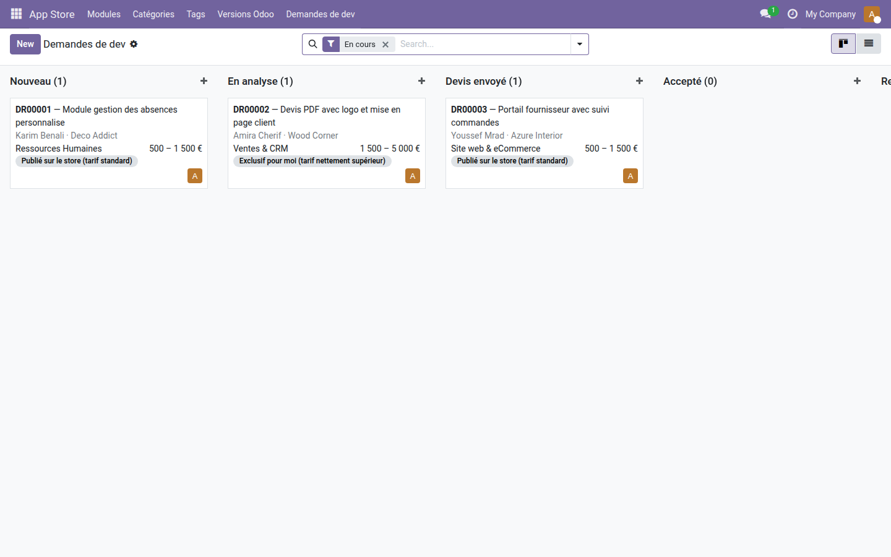
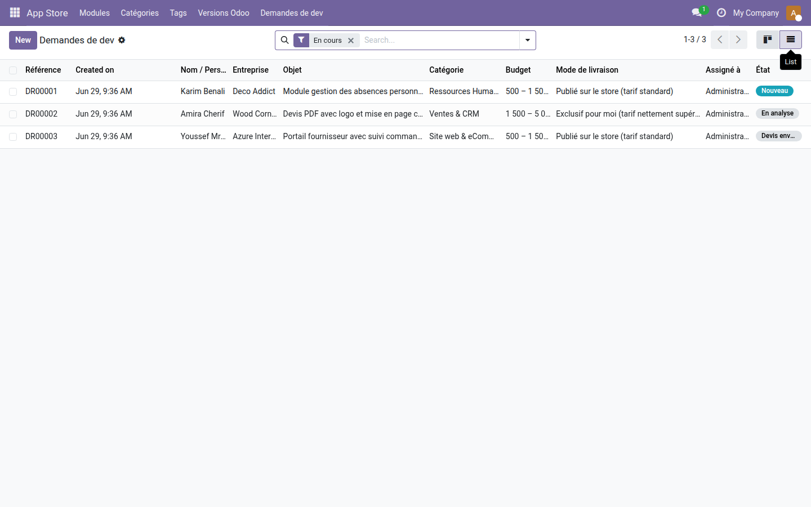
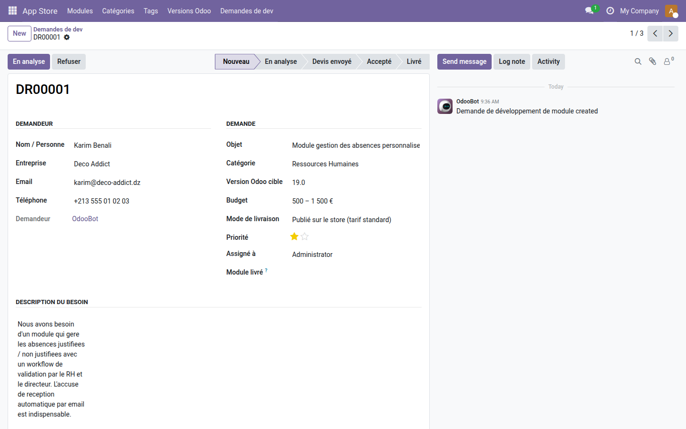

Demandes de développement sur-mesure
Transformez les besoins de vos clients en demandes structurées, suivies et livrées — sans perdre un seul email en chemin.
Un client veut un module spécifique. Il envoie un email. Vous répondez. Un autre email arrive. Trois semaines plus tard, personne ne sait où en est le projet, le budget n'a jamais été confirmé et le fichier de specs dort dans votre boîte de réception. Ce flou coûte du temps, crée des malentendus et nuit à la relation client.
Ce que ça apporte
- 📋 Formulaire public intégré au store — vos clients soumettent leur besoin directement depuis
/apps/demande-developpement, avec sujet, version Odoo cible, budget et pièces jointes (PDF, ZIP, specs…).
- 🔀 Pipeline backend en Kanban — chaque demande passe par des étapes claires : Nouveau → En analyse → Devis envoyé → Accepté → Livré. Un état toujours visible, un responsable assigné.
- ✉️ Accusé de réception automatique — le client reçoit un email dès la soumission, avec sa référence unique (ex. ODR/2024/0007). Aucune relance inutile.
- 💰 Budget et mode de livraison capturés dès le départ — le client précise sa fourchette budgétaire et choisit entre un module publié sur le store ou exclusif. Vous entrez en discussion avec toutes les infos.
- 🔗 Lien direct module livré — à la clôture, reliez la demande au module créé dans le store. Traçabilité complète de la demande à la livraison.
- 💬 Chatter et activités intégrés — échangez en interne, planifiez des rappels, suivez l'historique complet sur chaque demande via le chatter Odoo natif.
Aperçus réels
1. Pipeline Kanban — vue par étape
Chaque demande est regroupée par étape (Nouveau, En analyse, Devis envoyé…) avec le nom du client, la catégorie et le budget affiché directement sur la carte.

2. Vue liste — suivi global avec badges d'état
La vue liste affiche toutes les demandes en cours avec leurs références, entreprises, budgets et badges d'état colorés (Nouveau en bleu, En analyse en gris, Devis envoyé…).

3. Formulaire détail — informations complètes et chatter
Le formulaire centralise toutes les informations du demandeur, la description du besoin, la barre d'état interactive et l'historique des échanges internes via le chatter Odoo natif.

Pourquoi l'adopter
- Centralisez toutes vos demandes de dev dans un seul pipeline — fini les emails éparpillés entre collègues.
- Le client remplit un formulaire structuré : vous gagnez le temps d'aller chercher les informations de base (version, budget, specs).
- Le CTA "Demander un module sur-mesure" s'affiche automatiquement dans le catalogue
/apps — aucune configuration manuelle.
- Validation stricte des pièces jointes côté serveur (types autorisés, 10 Mo max / fichier, 25 Mo total) — robuste dès l'installation.
- Module gratuit, licence LGPL-3, déployable en quelques secondes sur votre instance Community ou Enterprise.
Licence LGPL-3 — compatible Odoo 19.0. Dépend de oski_app_store, website, mail, portal. Support : apps@odooskills.com.